2020年北京市中考数学试题 · 数学解答题 第28题 · 对应解析
28.在平面直角坐标系 中，⊙O的半径为1，A，B为⊙O外两点，AB=1．给出如下定义：平移线段AB，得到⊙O的弦
中，⊙O的半径为1，A，B为⊙O外两点，AB=1．给出如下定义：平移线段AB，得到⊙O的弦
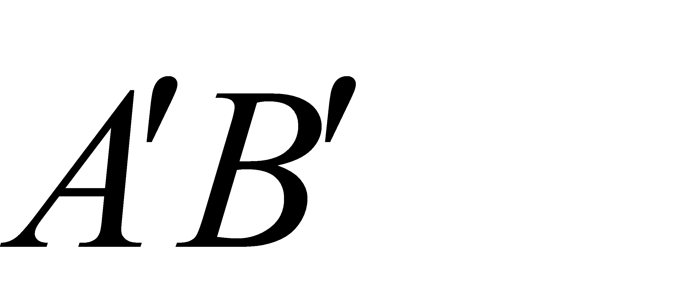
（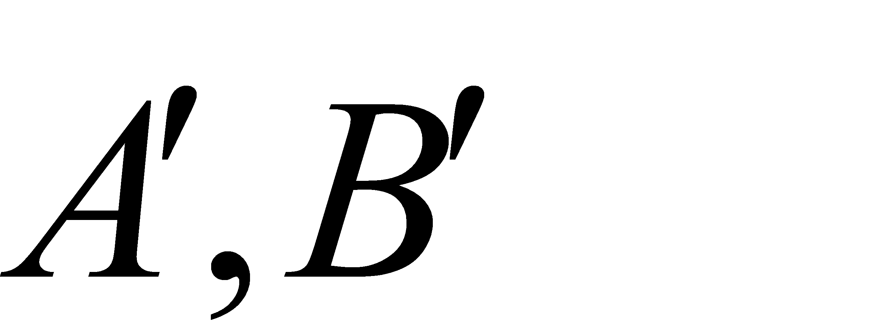
分别为点A，B的对应点），线段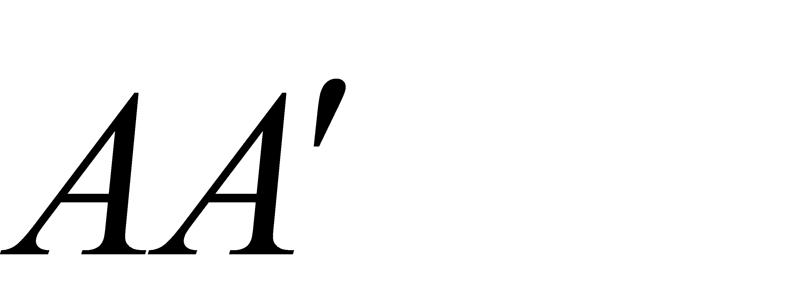
长度的最小值称为线段AB到⊙O的“平移距离”．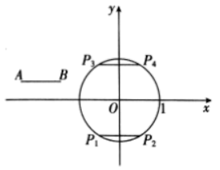
（1）如图，平移线段AB到⊙O的长度为1的弦
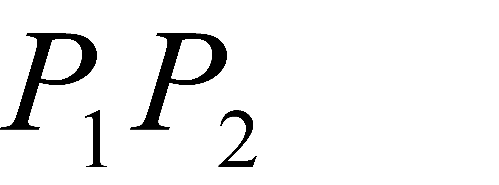
和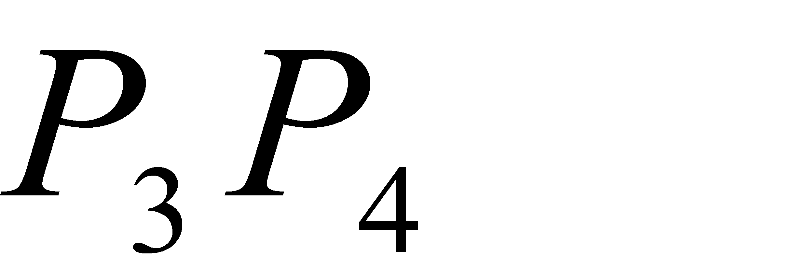
，则这两条弦的位置关系是 ；在点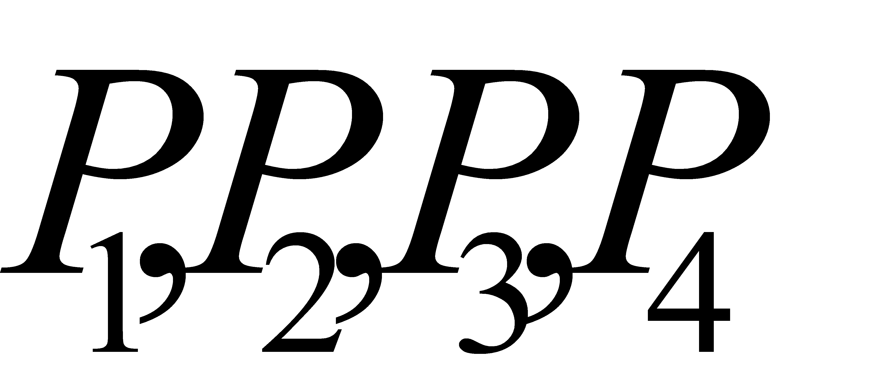
中，连接点A与点 的线段的长度等于线段AB到⊙O的“平移距离”；（2）若点A，B都在直线
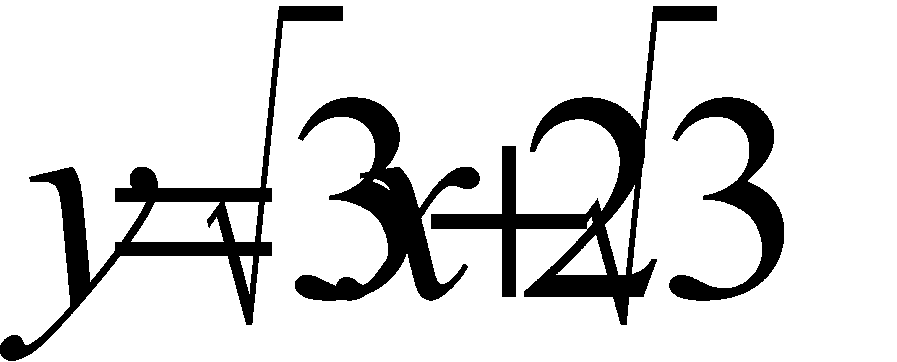
上，记线段AB到⊙O的“平移距离”为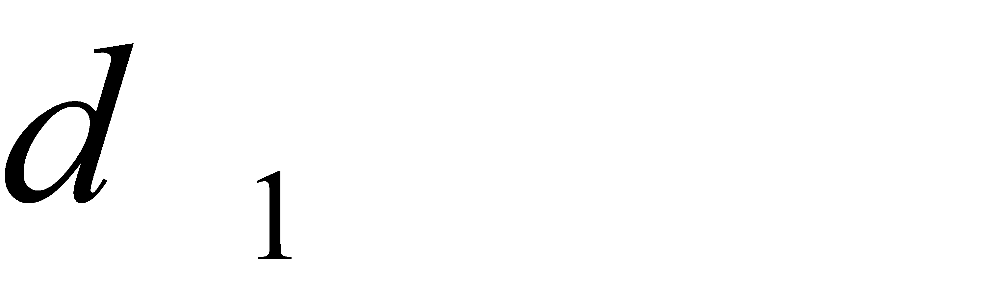
，求的最小值；（3）若点A的坐标为
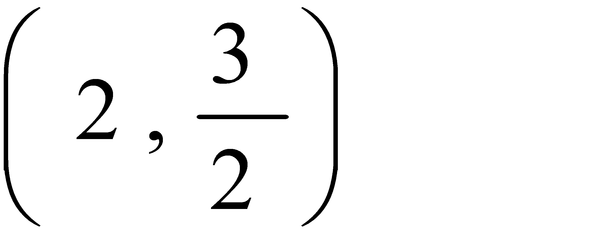
，记线段AB到⊙O的“平移距离”为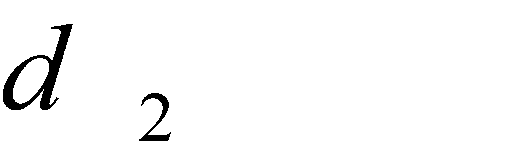
，直接写出的取值范围．【答案】（1）平行，P3；（2）
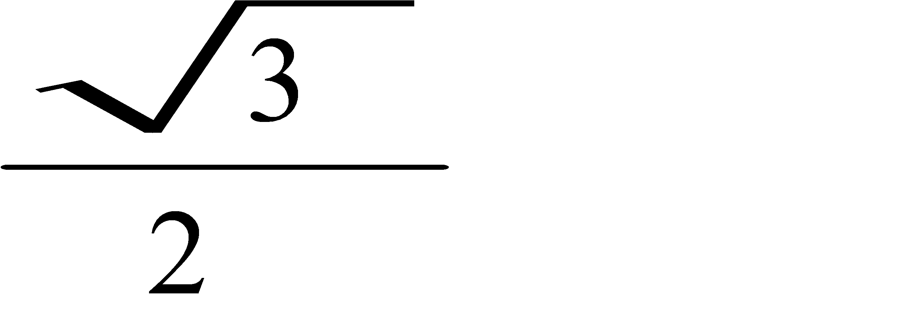
；（3）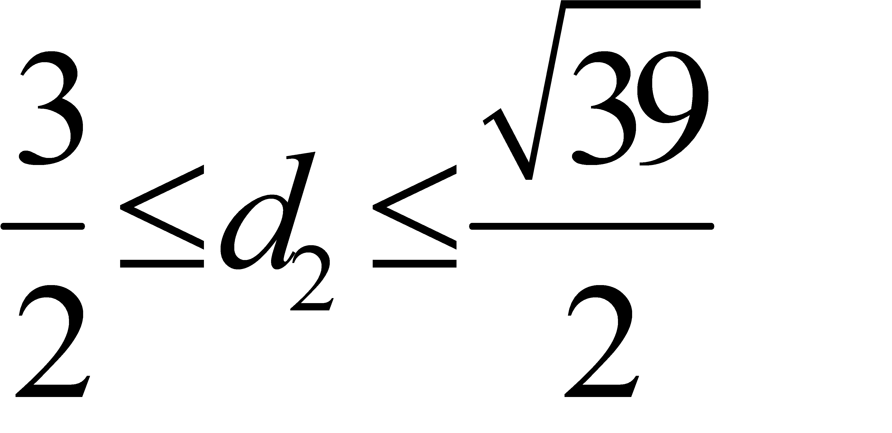
【解析】
 分析】
分析】
（1）根据圆的性质及“平移距离”的定义填空即可；
（2）过点O作OE⊥AB于点E，交弦CD于点F，分别求出OE、OF的长，由
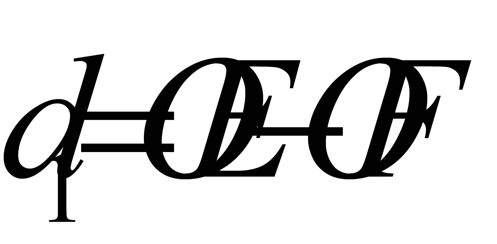
得到的最小值；（3）线段AB的位置变换，可以看作是以点A为圆心，半径为1的圆，只需在⊙O内找到与之平行，且长度为1的弦即可．平移距离的最大值即点A，B点的位置，由此得出的取值范围．
【详解】解：（1）平行；P3；
（2）如图，线段AB在直线上，平移之后与圆相交，得到的弦为CD，CD∥AB，过点O作OE⊥AB于点E，交弦CD于点F，OF⊥CD，令
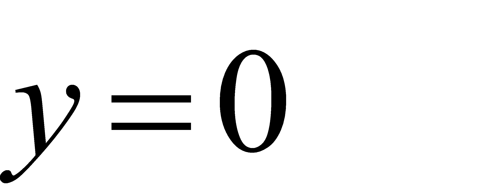
，直线与x轴交点为（-2，0），直线与x轴夹角为60°，∴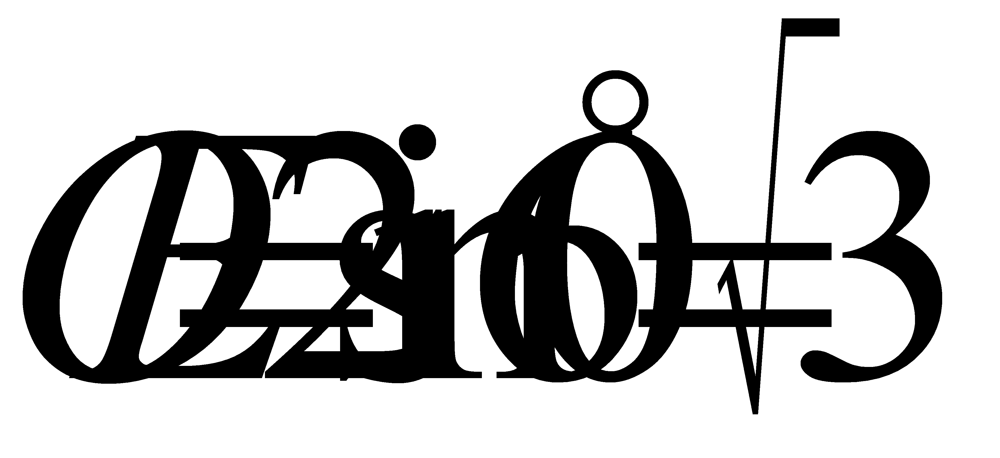
．由垂径定理得：
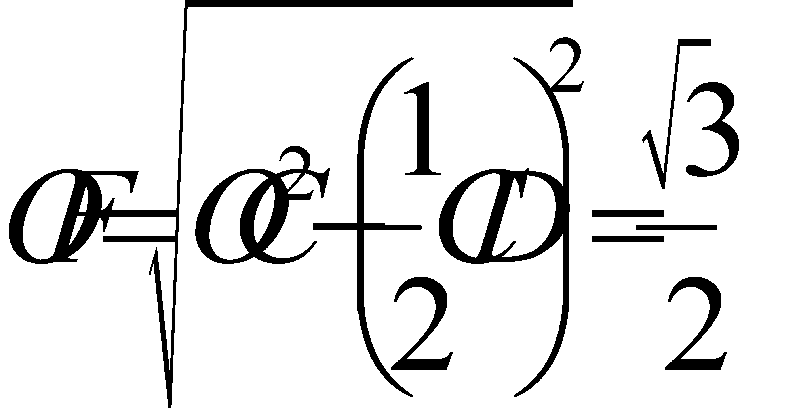
，∴
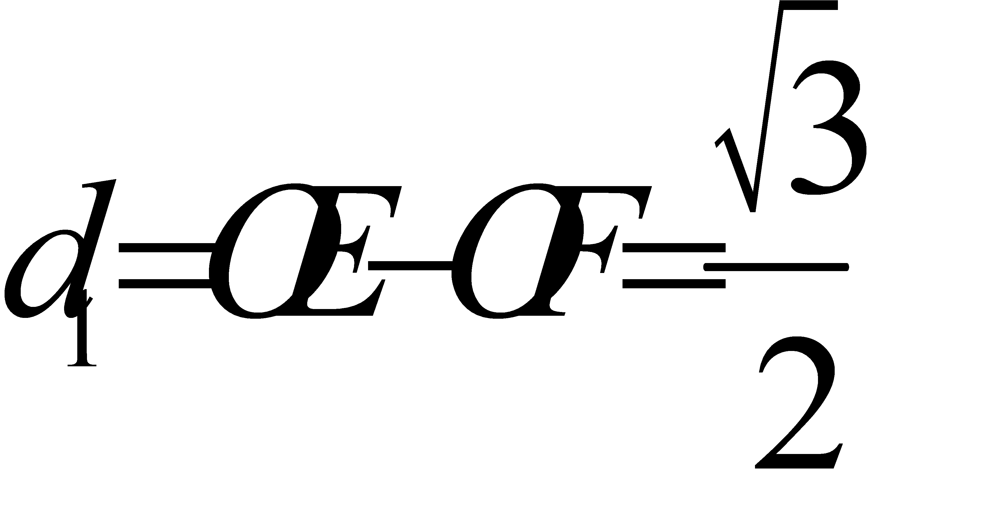
；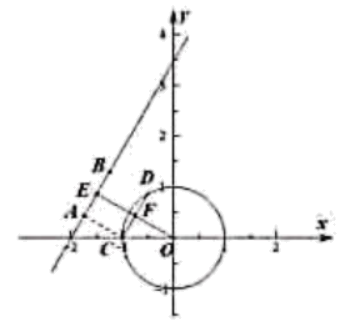
（3）线段AB的位置变换，可以看作是以点A为圆心，半径为1的圆，只需在⊙O内找到与之平行，且长度为1的弦即可；
点A到O的距离为
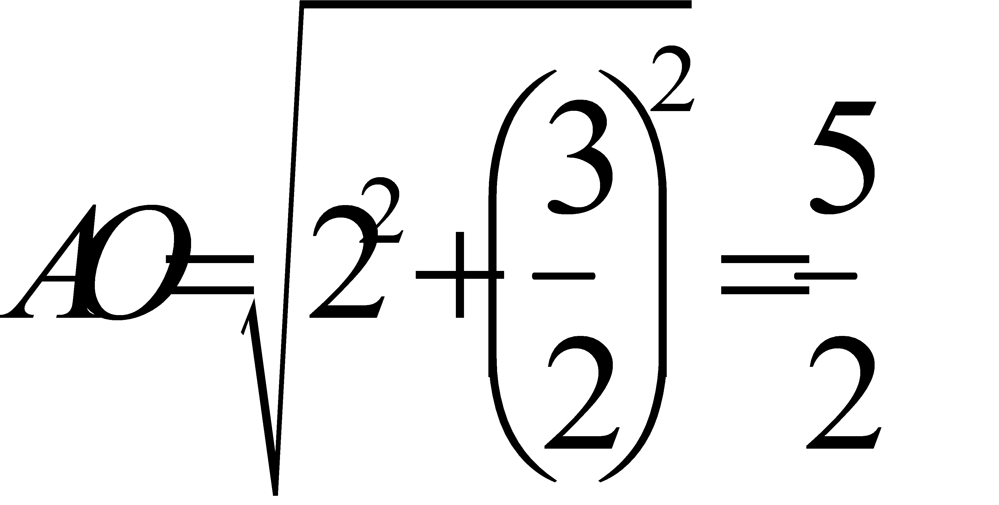
．如图，平移距离的最小值即点A到⊙O的最小值：
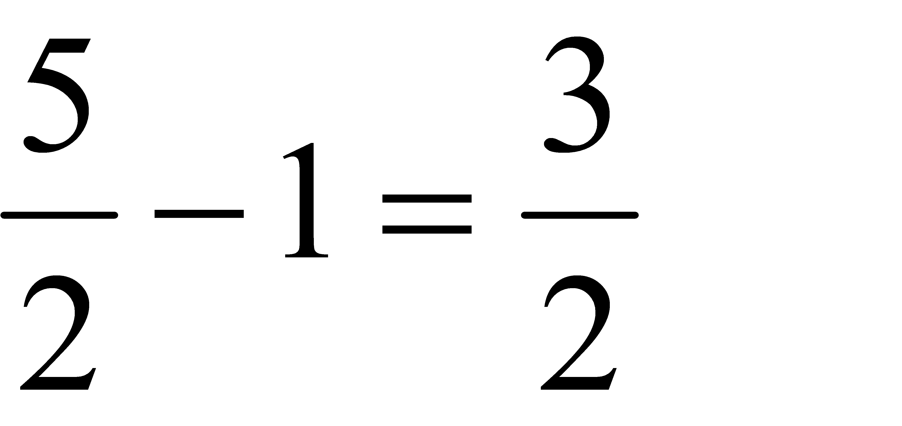
；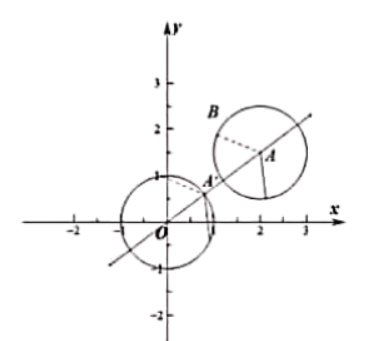
平移距离的最大值线段是下图AB的情况，即当A1,A2关于OA对称，且A1B2⊥A1A2且A1B2=1时.∠B2A2A1=60°，则∠OA2A1=30°,
∵OA2=1,∴OM= , A2M=,
, A2M=,
∴MA=3,AA2=
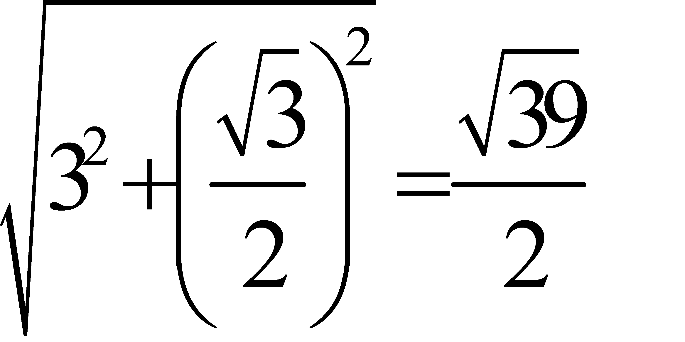
,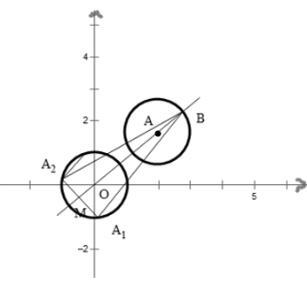
∴的取值范围为：
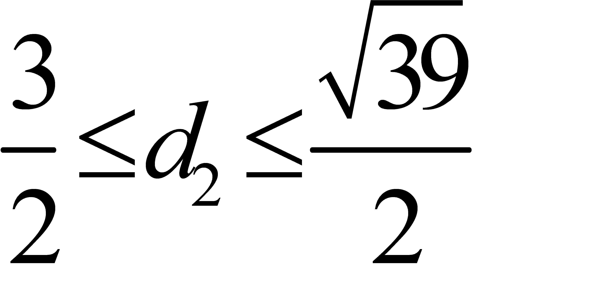
．【点睛】本题考查圆的基本性质及与一次函数的综合运用，熟练掌握圆的基本性质、点与圆的位置关系、直线与圆的位置关系是解题的关键．